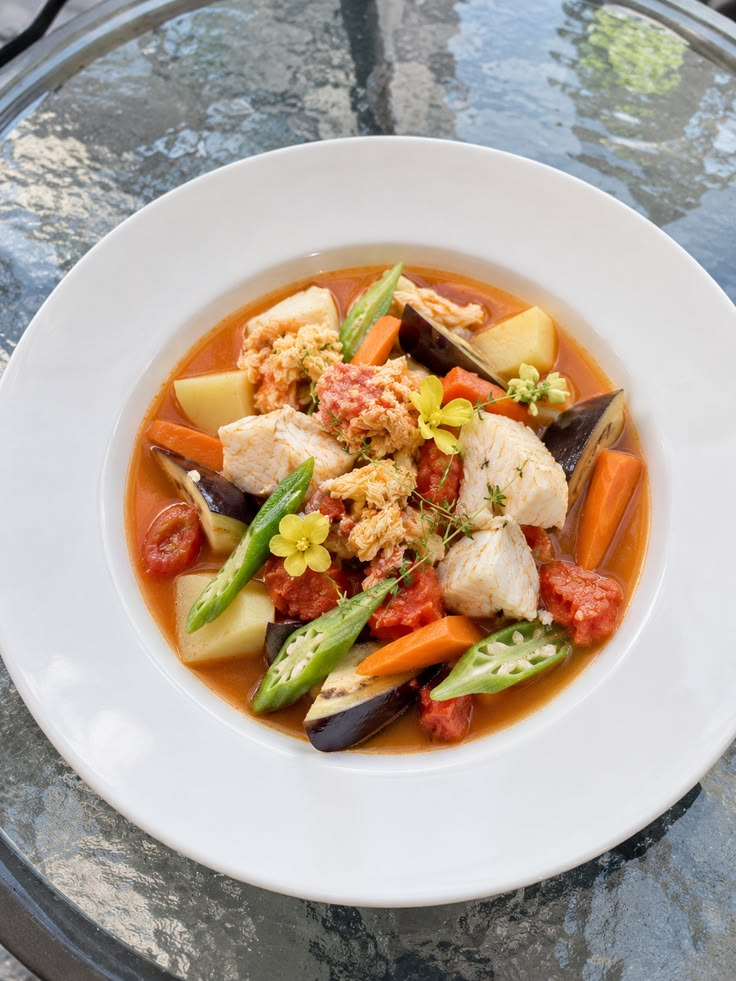

Le Cobuillon de poisson
Incontournable des dimanches en famille, le cobuillon de poisson (ou court-bouillon) est un plat traditionnel où le poisson frais du jour est poché puis mijoté dans une sauce rouge intensément parfumée.
Ce plat emblématique se distingue par sa juste acidité apportée par le citron vert, la douceur des tomates fraîches et le bouquet aromatique des épices locales qui subliment la finesse de la chair du poisson.
Le secret de sa préparation
Le secret réside d'abord dans la marinade : le poisson frais (souvent du vivaneau, de la dorade ou du capitaine) est massé avec du sel, de l'ail écrasé, du jus de citron vert et une pointe de piment, puis laissé au frais pendant quelques heures pour s'imprégner des saveurs.
La cuisson commence par la préparation de la sauce (le roussi) à base de cives (oignons pays), d'oignons, d'ail, de tomates fraîches concassées et de persil. On y dépose ensuite délicatement les morceaux de poisson avec leur marinade, avant de laisser pocher à feu doux pour garder la chair tendre et juteuse.
Il est traditionnellement servi bien chaud, accompagné de riz blanc créole, de bananes jaunes ou de légumes-pays cuits à l'eau (igname, madère, manioc).